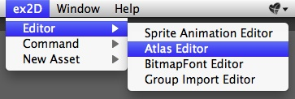
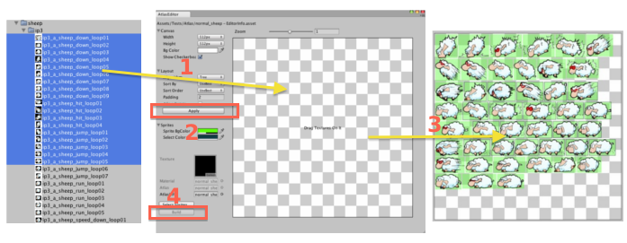
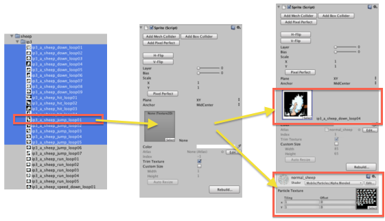

Getting Started With ex2D
Install
- Import packages from Unity Store.
- After importing the package, a “ex2D” folder will be in your Project Window.
- A “ex2D” option will be installed in the Menu in Unity editor.
- A “ex2D” group will be installed in the Menu > Component in Unity editor.
- Congratulation! You have successfully installed ex2D Unity extension.
Add a Sprite in the Scene
Step 1: Create Atlas asset
1. Choose a folder or file in Project window.
2. Right click the selected folder/file popup the menu
3. Select the menu item Create > ex2D Atlas Info to open the create Wizard
{kind=link}
4. Click Create button in the Wizard to create the New Atlas
{kind=link}
5. You will see 4 files created in your path
{kind=link}
Step 2: Import Textures to Atlas
1. Open Atlas Editor through Menu > ex2D > Editor > Atlas Editor

2. Select the “New Atlas - EditorInfo” created in Step 1
3. Select the texture you want to add, and drag and drop them into the atlas editor.
4. Click Apply button to let ex2D automatically arrange sprite layout.
5. Click Build or press Command/Ctrl + s on your keyboard to generate the updated atlas texture.

Step 3: Create new sprite
1. Create an empty GameObject in the scene
2. Add Sprite Component by choosing Menu > Component > ex2D > Sprite
3. Drag a texture to the Inspector, and put it into the Texture Field.

 Note: it is recommend to drag a texture that imported in a Atlas asset in Step 2, but ex2D accept render sprite through single texture.
Note: it is recommend to drag a texture that imported in a Atlas asset in Step 2, but ex2D accept render sprite through single texture.